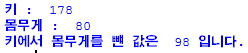
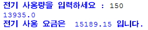
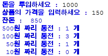

연습문제를 풀어봅시다.
(1) 먼저 height,weight,cha 세 개의 변수를 선언합니다.
그리고 height 변수에는 키를, weight 변수에는 몸무게를 저장하고
cha 변수에는 키에서 몸무게를 뺀 값을 저장합니다.
출력은 다음과 같이 출력되도록 작성합니다.
(HINT. print에서 문장과 변수를 같이 출력하는 법 : print("문장",변수),
마지막 cha 출력은 print 띄어쓰기 방법 중 콤마를 이용해 볼것)

-해답-
height = 178
weight = 80
cha = height - weight
print("키 : ",height)
print("몸무게 : ",weight)
print("키에서 몸무게를 뺸 값은 ",cha,"입니다.")
(2) 전기 사용량을 kw 단위로 입력하면 사용 요금을 계산해 주는 프로그램이다.
조건은 다음과 같다.
*기본요금(amount) : 660원
*kw당 사용요금 : 89원
*전체 요금(price) = 기본요금 + (사용량 + kw당 사용요금)
*세금(tax)은 전체요금의 9%
*최종 사용요금(total) = 전체요금(amount) + 세금(tax)
[TIP. input함수는 사용자 입력을 문자열로 반환하기 때문에 변환이 필요하다.
ex) a = float((input("입력을 실수형으로 "))]
< *1,*2,*3 을 다음 채워 출력결과를 나타내어라>
amount = float((1)("전기 사용량을 입력하세요 : "))
price = 660 + (amount * 88.5)
print(price)
tax = price * 0.09
total = (2) + (3)
print("전기 사용 요금은 ",total,"입니다.")

(3)자판기 잔돈 계산을 해보자
한신이는 자판기에서 150원짜리 커피를 사먹고 잔돈을 어떻게 받았을까?
조건은 다음과 같다.
*투입금액(insert) - 사용자에게 입력을 받는다.
*상품금액(price) - 사용자에게 입력받는다.
*반환금액(change)
*w500,w100,w50,w10 ->반환되는 동전들의 갯수를 출력한다.
[HINT. 1120원을 500원으로 나눴을 때 몫 -> 500동전의 잔돈갯수
나머지를 100으로 나눴을 때 몫 -> 100동전의 잔돈갯수
나머지를 10으로 나눴을 때 몫 -> 10동전의 잔돈갯수]
< *1,*2,*3 을 다음 채워 출력결과를 나타내어라>
insert = int((*1)("돈을 투입하세요 : "))
price = int((*1)("상품의 가격을 입력하세요 : "))
change = insert - price
print("잔돈 : ",change)
w500 = (*2)(change/500) #정수형으로 형변환을 시켜야 갯수를 구할 수 있다.
change = change%500
w100 = (*2)(change/100)
change = change%100
w50 = (*2)(change/50)
change = change%50
w10 = (*2)(change/10)
(*3)("500원 짜리 동전 :",w500,"개")
(*3)("100원 짜리 동전 :",w100,"개")
(*3)(" 50원 짜리 동전 :",w50, "개")
(*3)(" 10원 짜리 동전 :",w10, "개")
